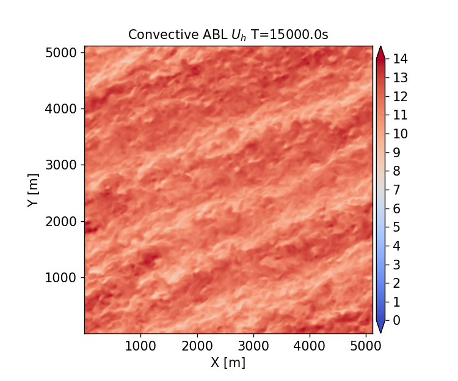

Convectively unstable ABL for wind turbine simulations
This benchmark problem is a slightly convective unstable atmospheric boundary layer that is used as an inflow for the actuator line NREL5MW and geometry resolved NREL5MW benchmark cases. The conditions and details of the case are summarized below:
Hub-height wind speed: 11.4 m/s
Hub-height wind direction: 240 degrees SW
Surface roughness: 0.01 m
Surface temperature flux: 0.005 K-m/s
Domain size: 5120m x 5120m x 1920m
Mesh size: 512 x 512 x 192
Total mesh size: 50331648 cells
Contents
Simulation Setup
Full details of the simulation setup are provided in setup documentation.
The case was set up using the AMR-Wind frontend with the notebook convectiveABL_setup.ipynb. This allows the locations of the refinement regions and sampling planes to be setup properly relative to the location of the NREL5MW turbine.
Input files are in the input_files directory. There are two stages to this run:
Spin-up of the precursor: Use the convective_abl.inp input file to run the case from t=0 to 15,000 seconds.
Capture the boundary plane and sampling plane data: Use convective_abl_bndry.inp to run the case from t=15,000 to 20,000 seconds to output the data needed to run the turbine cases.
Current case was run with AMR-Wind version f67a52dd6aa1882595d16700527470bc8097cb13
Performance
Full details provided in performance documentation.
The simulation was run on the Sandia Flight HPC cluster using the following resources:
Parameter |
Value |
|---|---|
Number of nodes |
8 |
Number of CPUs |
896 |
Wall-time |
5.4 hours |
CPU-hours |
4821.7 |
Results
Statistics from the ABL are calculated over the time interval \(t \in [15000 , 20000]s\) using scripts and notebooks from the postprocessing directory. The results are saved to the results directory.
Horizontally averaged statistics are computed in the AVG_horiz_profiles.ipynb notebook and are summarized in the following table at the bottom-tip, hub-height, and top-tip location of the NREL5MW:
z |
Horizontal Velocity |
Wind Direction |
TI (TKE) |
Shear Exponent |
Veer |
|---|---|---|---|---|---|
27 m |
9.89 m/s |
239.74 deg |
8.29 % |
0.1300 |
0.0087 deg/m |
90 m |
11.40 m/s |
240.00 deg |
6.17 % |
0.0815 |
0.0006 deg/m |
153 m |
11.90 m/s |
240.02 deg |
5.38 % |
0.0693 |
0.0001 deg/m |
The veer and shear exponent over the rotor disk are 0.0015 deg/m and 0.0944, respectively. The corresponding friction velocity, \(u^*\), inversion height, \(z_i\), and Obukhov length-scale for this simulation are:
\(u^*\) = 0.468 m/s
\(z_i\) = 803.133 m
Obukhov Length = -2447.446 m (computed at z=27 m)
Flow Visualizations
An instantaneous hub-height visualization of the horizontal velocity at \(t=15,000s\) is included below. 
Horizontal Profiles
Horizontally averaged profiles are computed in the AVG_horiz_profiles.ipynb Jupyter notebook are shown below.
Note: The python routines for computing horizontal profiles from the statistics file(s) generated by AMR-Wind rely on importing the postproamrwindabl module from the AMR-Wind front end library. It is not necessary to import the entire AMR-Wind front end library to compute the horizontal profiles. If necessary, download the module files and edit the lines in the python code which define postproamrwinddir to include the location of that module:
# Location of postproamrwindabl module inside the amr-wind-frontend
postproamrwinddir = '~/src/amr-wind-frontend/'
import sys, os, shutil, io
if postproamrwinddir not in sys.path:
sys.path.append(postproamrwinddir)
Horizontal velocity:
Temperature:

Wind Direction:
Turbulence Intensity (TKE):
Resolved Reynolds stresses:
Resolved Temperature Fluxes:
Metmast Profiles
Averaged wind profiles from a virtual metmast at the turbine location are computed in the AVG_metmast.ipynb Jupyter notebook and are shown below.

Note: The path to the AMR-Wind front end library must be provided in the AVG_metmast.ipynb Jupyter notebook. If necessary, download the library and edit the lines which define amrwindfedirs to include any locations of that library, e.g.,
# Add any possible locations of amr-wind-frontend here
amrwindfedirs = ['/projects/wind_uq/lcheung/amrwind-frontend/',
'/ccs/proj/cfd162/lcheung/amrwind-frontend/']
import sys, os, shutil, io
for x in amrwindfedirs: sys.path.insert(1, x)
Wavenumber Spectra
Two-dimensional (2D) wavenumber spectra are computed from the XY planes sampled from AMR-Wind using the post-processing engine in the the AMR-Wind front end library. The yaml file for computing 2D wavenumber spectra of vertical planes sampled in this benchmark case can be called using the ppengine.py utility as
python ppengine.py postpro_windspectra.yaml
Details of the 2D wavenumber computation can be found in the documentation for the post-processing engine. The ABL_wavenumber_spectra.ipynb Jupyter notebook plots the energy, horizontal, and vertical 2D wavenumber spectra, which are reported below at the bottom-tip and hub-height locations of the NREL5MW:
Temporal Spectra
Temporal spectra are computed from the XY planes sampled from AMR-Wind using the post-processing engine in the AMR-Wind front end library. The ABL_temporal_spectra.ipynb Jupyter notebook can be used to compute the temporal spectra and to plot the results against a Kaimal spectra. Details of the temporal spectra computation can be found in the documentation for the post-processing engine.
Note: The path to the AMR-Wind front end library must be provided in the ABL_temporal_spectra.ipynb Jupyter notebook. If necessary, download the library and edit the lines which define amrwindfedirs to include any locations of that library, e.g.,
# Add any possible locations of amr-wind-frontend here
amrwindfedirs = ['/projects/wind_uq/lcheung/amrwind-frontend/',
'/ccs/proj/cfd162/lcheung/amrwind-frontend/']
import sys, os, shutil, io
for x in amrwindfedirs: sys.path.insert(1, x)
The streamwise, lateral, and vertical temporal spectra sampled from XY planes at the bottom-tip and hub-height locations of the NREL5MW are reported below:
z = 27m
z = 90m
Integral Length scale
The longitudinal and latitudinal integral length scales are computed in the ABL_integral_lengthscale.ipynb notebook, resulting in
Longitudinal length scale = 539.61 m
Latitudinal length scale = 97.13 m
The computation of the integral length scale relies on the AMR-Wind front end library to compute the two-point correlation.
Note: The path to the AMR-Wind front end library and the AMR-Wind front end utilities must be provided in the ABL_integral_lengthscale.ipynb notebook. If necessary, download the library and edit the lines which define amrwindfedirs to include any locations of that library, e.g.,
# Add any possible locations of amr-wind-frontend here
amrwindfedirs = ['/projects/wind_uq/lcheung/amrwind-frontend/',
'/ccs/proj/cfd162/lcheung/amrwind-frontend/']
import sys, os, shutil
for x in amrwindfedirs: sys.path.insert(1, x)
for x in amrwindfedirs: sys.path.insert(1, x+'/utilities')
The two-point correlation, \(R_{ij}\), as a function of longitudinal and latitudinal separation distance \(\boldsymbol{\xi}\) are shown below at multiple locations, \(\boldsymbol{x}\), on the XY-plane at z=90m: